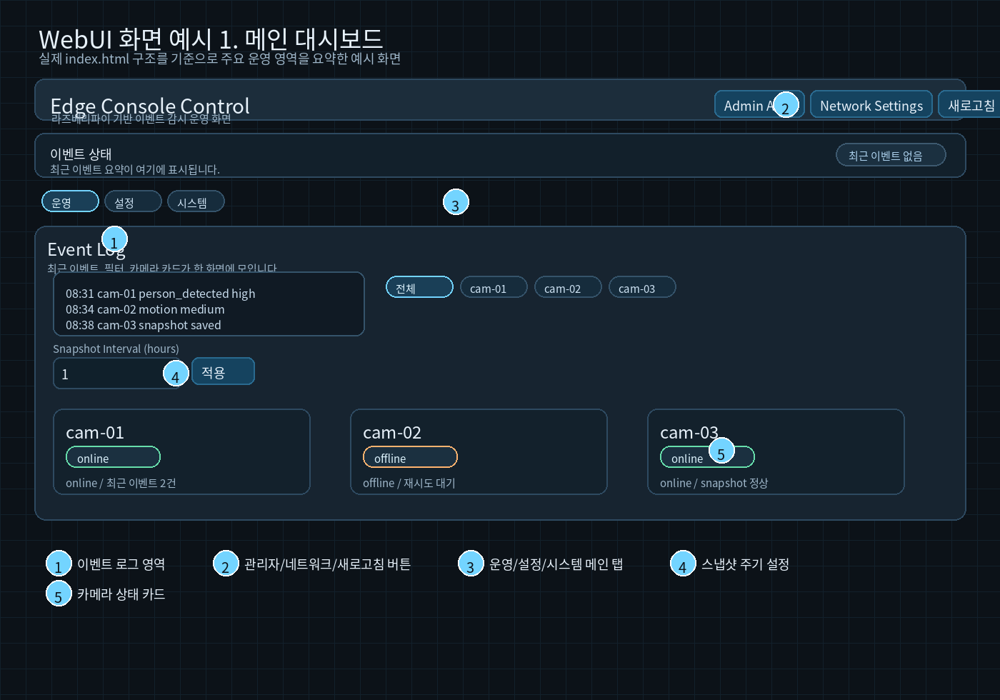
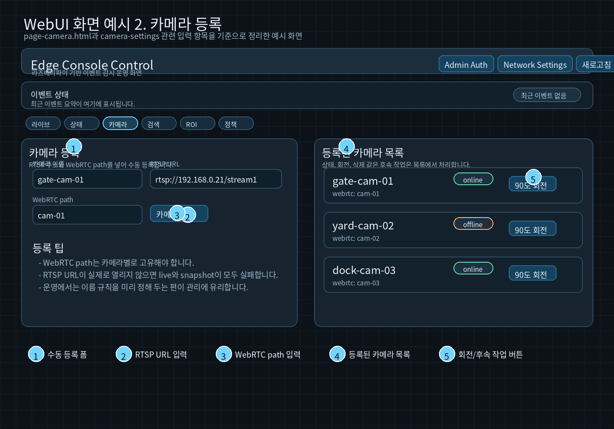
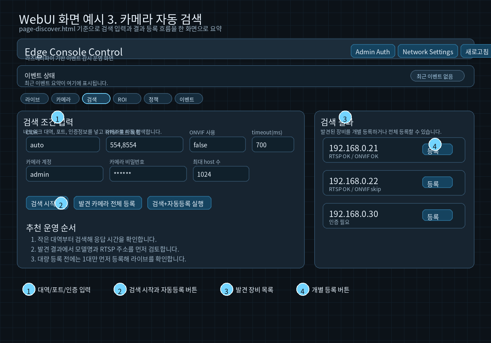
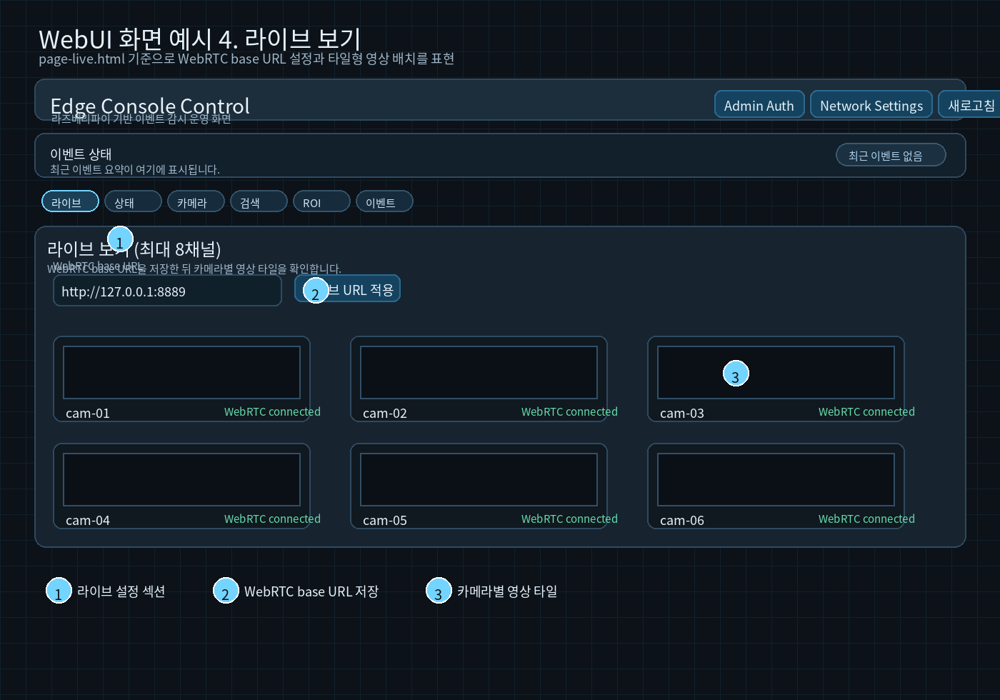
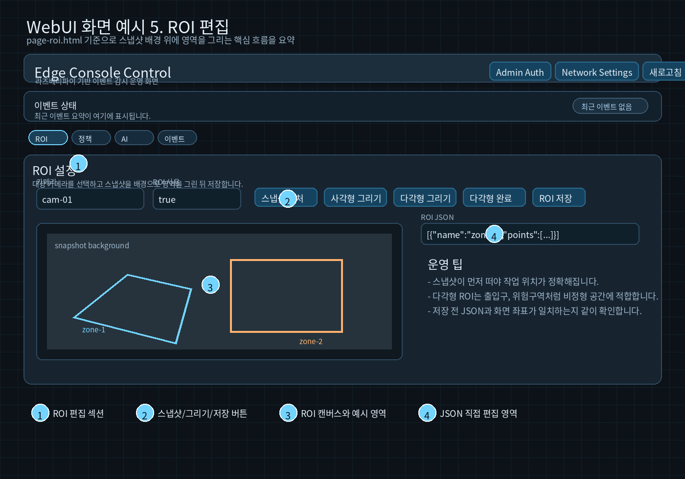
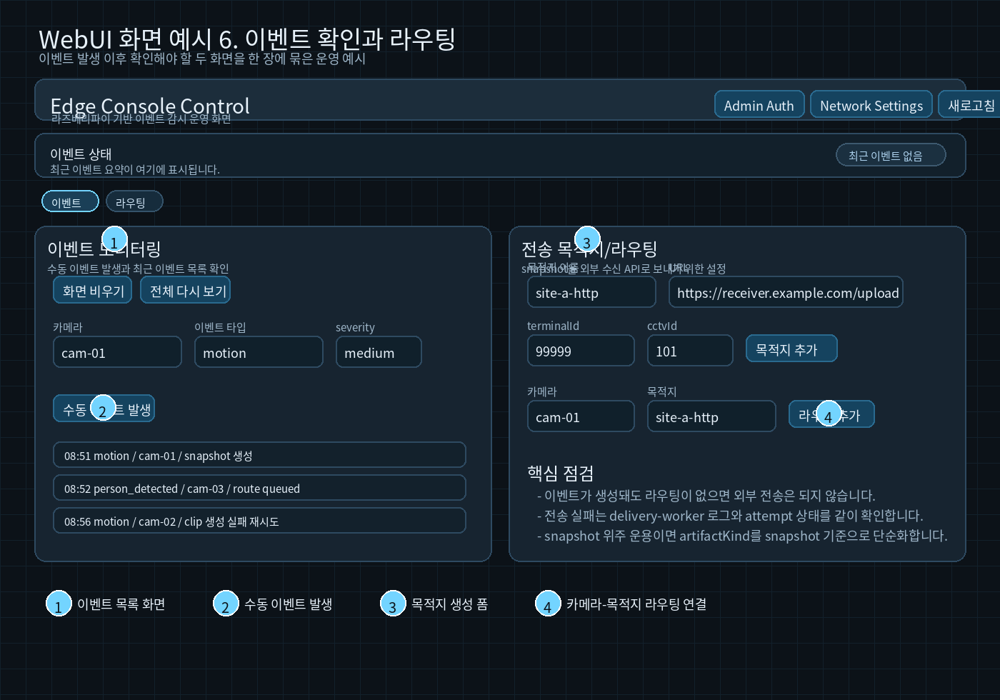

Print PDF Edition
VMS Web UI 운영 매뉴얼
작성일: 2026-03-10 | 대상 시스템: vms-8ch-webrtc
이 문서는 VMS WebUI의 실제 화면 구조와 버튼명을 기준으로 정리한 인쇄용 배포본입니다.
아래 이미지는 런타임 실캡처가 아니라 실제 WebUI 소스 기준으로 만든 화면 예시이며, 운영 절차를 빠르게 따라가기 위한 안내용으로 사용합니다.
- 1. 문서 목적
- 2. 먼저 알아둘 것
- 3. 운영자가 보는 첫 화면
- 4. 자주 쓰는 화면별 설명
- 5. 실제 운영 흐름
- 6. 화면과 파일의 대응
- 7. 빠른 점검 명령
1. 문서 목적
이 문서는 services/api/app/static/의 실제 Web UI 소스와 버튼명, 입력 필드, 운영 흐름을 기준으로 다시 정리한 운영 매뉴얼입니다.
- 배포용 PDF 기준으로 재정리한 단일 컬럼 문서입니다.
- 운영자가 화면 위치를 빠르게 찾고 작업 순서를 바로 따라갈 수 있게 구성했습니다.
- 화면 예시는 실제 HTML/CSS 구조와 필드명을 반영한 소스 기반 이미지입니다.
2. 먼저 알아둘 것
기본 접속 주소
http://127.0.0.1:8080/
WebRTC 기본 주소
http://127.0.0.1:8889
deploy/docker-compose.yml 기준 컨테이너가 모두 올라왔는지 확인합니다./healthz가 {"ok":true}를 반환하는지 확인합니다.- 라이브 화면이 비어 있으면 MediaMTX와 RTSP 연결 상태를 먼저 확인합니다.
3. 운영자가 보는 첫 화면

메인 대시보드 예시. 이벤트 로그, 상단 버튼, 메인 탭, 스냅샷 주기, 카메라 상태 카드를 먼저 봅니다.
- 카메라 상태 카드에서 online/offline을 먼저 봅니다.
- 이벤트 로그가 최근 시각으로 갱신되는지 확인합니다.
- 필요 시
새로고침으로 상태를 즉시 재조회합니다.
- 설정을 바꿔야 하면
설정 탭으로 이동합니다.
4. 자주 쓰는 화면별 설명
4.1 카메라 등록

수동 등록 폼, RTSP URL, WebRTC path, 등록 목록, 회전 버튼 위치를 보여주는 예시입니다.
카메라 이름 입력- 실제 연결 가능한
rtsp://... 입력
- 카메라별로 고유한
WebRTC path 입력
카메라 추가 실행- 오른쪽 목록에서 등록 결과 확인
RTSP URL이 틀리면 라이브, 스냅샷, 이벤트 처리 모두 연쇄적으로 실패합니다.
4.2 카메라 자동 검색

대역, 포트, 인증정보를 넣고 검색한 뒤 개별 등록 또는 전체 등록으로 넘기는 흐름입니다.
CIDR은 처음엔 작은 범위로 시작합니다.RTSP 포트 목록은 보통 554 또는 554,8554부터 시작합니다.- 인증이 필요한 장비면 계정과 비밀번호를 같이 넣습니다.
검색 시작 후 결과를 보고, 대량 등록 전 한 대만 먼저 검증합니다.
4.3 라이브 보기

WebRTC base URL 저장과 카메라별 영상 타일 위치를 보여주는 예시입니다.
WebRTC base URL이 실제 MediaMTX 주소와 맞는지 확인합니다.라이브 URL 적용으로 브라우저 기준 주소를 저장합니다.- 각 타일이 실제 영상으로 바뀌는지 확인합니다.
4.4 ROI 설정

스냅샷 배경 위에 영역을 그리고 JSON을 함께 확인하는 ROI 편집 예시입니다.
- 대상 카메라 선택
스냅샷 캡처로 배경 확보사각형 그리기 또는 다각형 그리기 선택- 실제 감지하고 싶은 구역만 표시
- 필요 시 JSON 확인
ROI 저장으로 반영
ROI 변경 후에는 수동 이벤트나 AI preview로 반드시 한 번 검증하는 편이 안전합니다.
4.5 이벤트 확인과 외부 전송

왼쪽은 이벤트 확인, 오른쪽은 목적지와 라우팅 설정 예시입니다.
이벤트 화면에서는 수동 이벤트 발생, 최근 이벤트 확인, 현재 시점 이후 이벤트만 보기 작업을 합니다.
라우팅 화면에서는 목적지 생성, 카메라와 목적지 연결, snapshot 전송 대상을 구성합니다.
이벤트가 생성돼도 라우팅이 없으면 외부 전송은 발생하지 않습니다.
5. 실제 운영 흐름
5.1 새 카메라 1대 추가
카메라 등록 또는 카메라 자동 검색으로 카메라를 넣습니다.라이브 보기에서 영상이 열리는지 확인합니다.ROI 설정에서 감지 구역을 잡습니다.이벤트 정책에서 clip 또는 snapshot 모드를 정합니다.- 필요하면
AI 모델과 이벤트 팩을 붙입니다.
수동 이벤트 발생 또는 AI preview로 동작을 확인합니다.- 외부 전송이 필요하면 목적지와 라우팅을 연결합니다.
5.2 이벤트가 안 생길 때
- 카메라 상태가
online인지 확인합니다.
- 라이브 화면에서 영상이 실제로 나오는지 확인합니다.
- AI 사용 카메라라면 모델 경로와 enable 상태를 확인합니다.
- ROI가 필요한 영역을 과하게 막고 있지 않은지 봅니다.
- 이벤트 정책과 이벤트 팩이 활성화돼 있는지 확인합니다.
AI Debug 또는 수동 이벤트로 기본 동작부터 쪼개서 확인합니다.
5.3 스냅샷은 생기는데 전송이 안 될 때
- 목적지 URL 확인
terminalId, cctvId, 카메라별 매핑 확인- bearer token 환경변수명 확인
- 라우팅 연결 여부 확인
delivery-worker 로그 확인
6. 화면과 파일의 대응
index.html: 통합 메인 화면page-camera.html: 카메라 등록/관리page-discover.html: 자동 검색page-live.html: 라이브page-roi.html: ROI 편집page-policy.html: 이벤트 정책page-route.html: 목적지와 라우팅page-ai.html: AI와 모델 설정page-ai-debug.html: 개발/점검용 AI 미리보기page-event.html: 이벤트 확인과 수동 이벤트 생성
7. 빠른 점검 명령
cd /media/fishduke/06800C3B800C3429/WorkWithCodex/vms-8ch-webrtc
docker compose -f deploy/docker-compose.yml --env-file deploy/.env ps
curl http://127.0.0.1:8080/healthz
docker logs vms-api --tail 200
docker logs vms-event-recorder --tail 200
docker logs vms-delivery-worker --tail 200
docker logs vms-mediamtx --tail 200